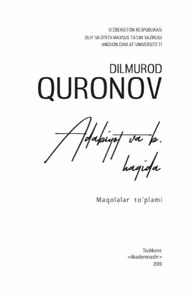
Adabiyot va b. haqida
Badiiy talqin, kompozitsion tafakkur, tarixiy poetika va tarjima tanqidchiligiga oid ilmiy maqolalar to'plami.
PDF yuklab olish · 1.0 MBKitoblar toʻliq holda, PDF koʻrinishida yuklab olish uchun qoʻyilgan.

Badiiy talqin, kompozitsion tafakkur, tarixiy poetika va tarjima tanqidchiligiga oid ilmiy maqolalar to'plami.
PDF yuklab olish · 1.0 MB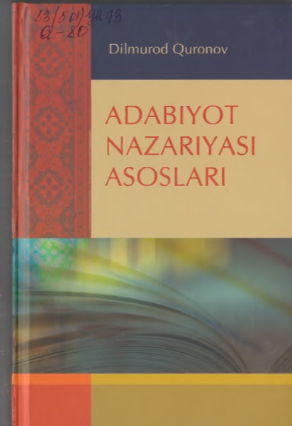
Adabiyot nazariyasining asosiy tushunchalari, badiiy asar tuzilishi va tahlil usullari bayon etilgan yirik qo'llanma.
PDF yuklab olish · 8.1 MB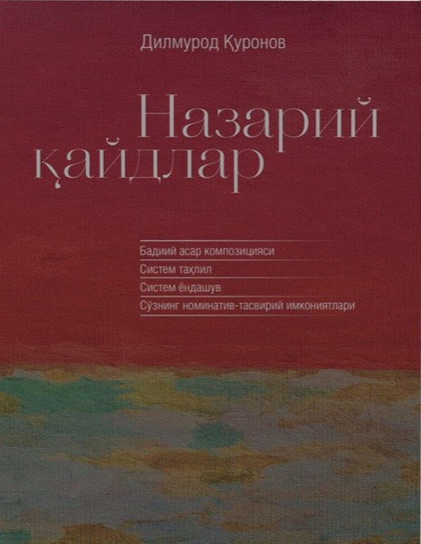
Adabiyot nazariyasining bahsli masalalari yuzasidan qaydlar.
PDF yuklab olish · 0.7 MB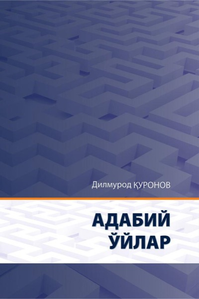
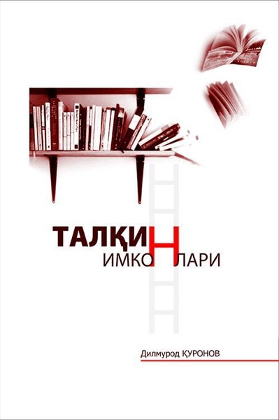
Badiiy asar talqini muammolariga bag'ishlangan maqolalar: olimning asarga yondashuv tamoyillari umumlashtirilgan.
PDF yuklab olish · 0.8 MB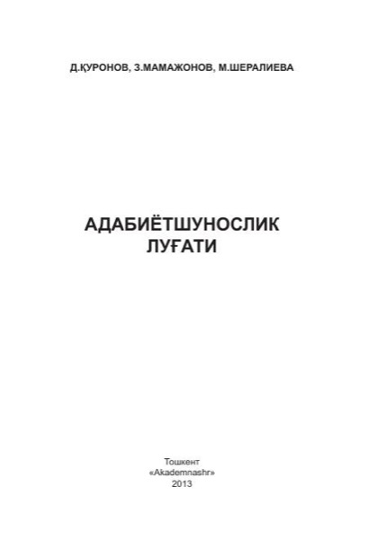
Z. Mamajonov va M. Sheraliyeva bilan hammualliflikda. Adabiyotshunoslik atamalarining izohli lug'ati, to'ldirilgan nashr.
PDF yuklab olish · 1.7 MB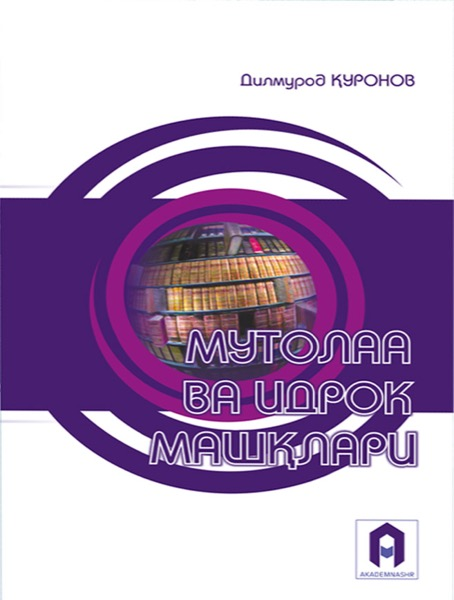
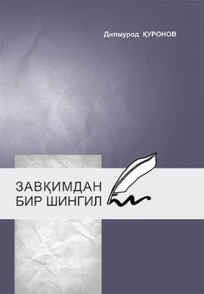
Adabiyot va o'qish zavqi haqidagi esse va maqolalar.
PDF yuklab olish · 1.0 MB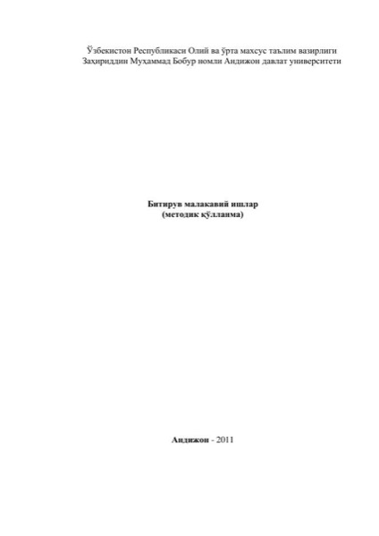
Bakalavr bitiruv malakaviy ishini bajarish bo'yicha uslubiy qo'llanma.
PDF yuklab olish · 0.3 MB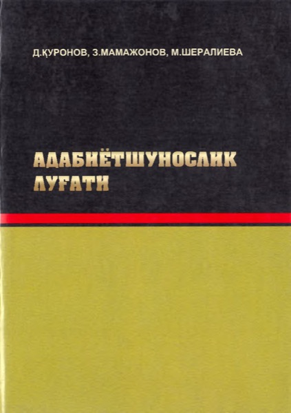
Z. Mamajonov va M. Sheraliyeva bilan hammualliflikda tuzilgan atamalar lug'atining birinchi nashri.
PDF yuklab olish · 8.7 MB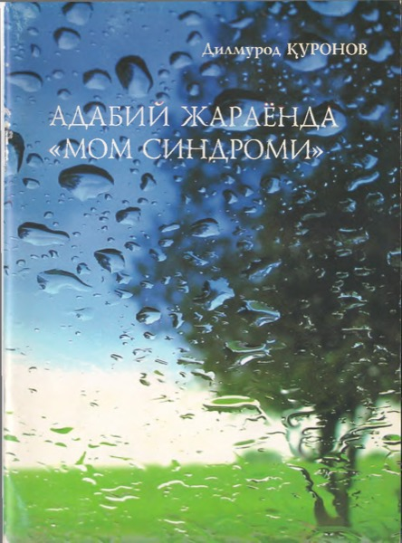
Adabiy jarayondagi "Mom sindromi" deb nomlangan hodisa tahliliga bag'ishlangan risola.
PDF yuklab olish · 1.3 MB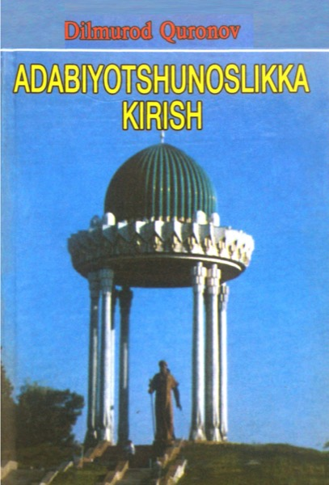
Oliy o'quv yurtlari uchun darslik: adabiyotshunoslik fanining predmeti, tarmoqlari va asosiy atamalari.
PDF yuklab olish · 4.1 MB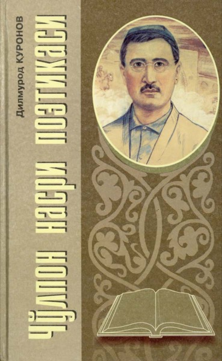
Cho'lpon nasrining badiiy tuzilishi, uslubi va poetik xususiyatlariga bag'ishlangan tadqiqot.
PDF yuklab olish · 7.5 MB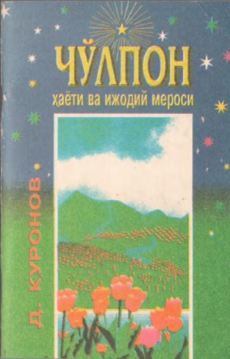
Shoir va adib Cho'lponning hayot yo'li hamda ijodiy merosi haqida.
PDF yuklab olish · 2.4 MB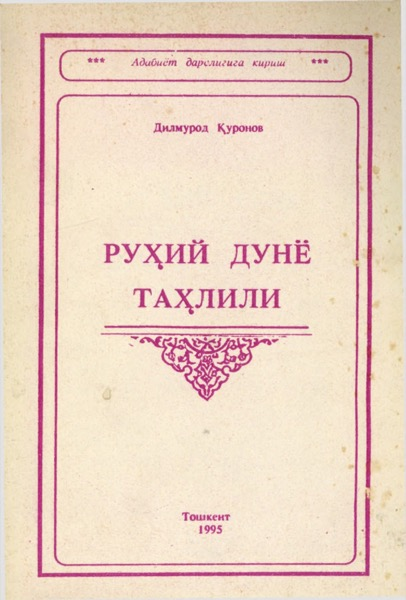
"Kecha va kunduz" romanida xarakterlar psixologizmi tahliliga bag'ishlangan ilk yirik tadqiqot.
PDF yuklab olish · 2.7 MB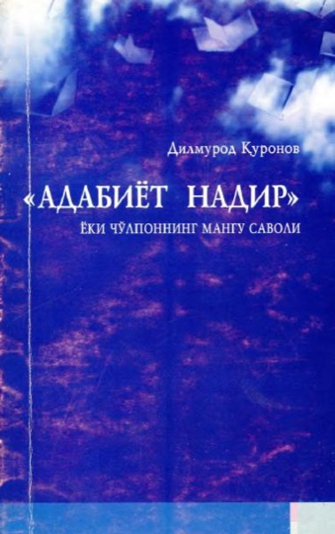
Cho'lpon qo'ygan "adabiyot nadir?" savoli atrofidagi mulohazalar.
PDF yuklab olish · 2.9 MB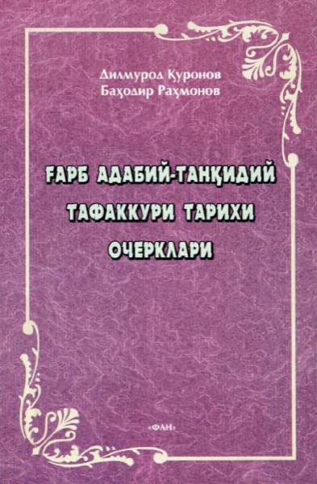
Antik davrdan bugungi kungacha G'arb adabiy tanqidi va nazariyasi taraqqiyoti haqida ocherklar.
PDF yuklab olish · 6.3 MB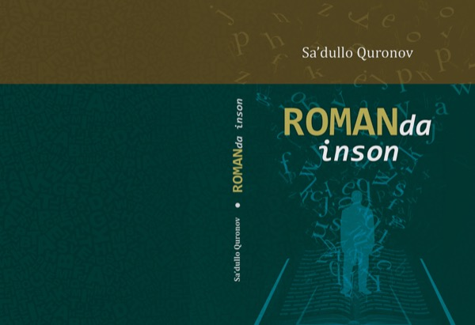
Mustaqillik davri oʻzbek romanlarida inson tasviri va inson konsepsiyasi tadqiqi. Masʼul muharrir — Dilmurod Quronov.
PDF yuklab olish · 1.5 MB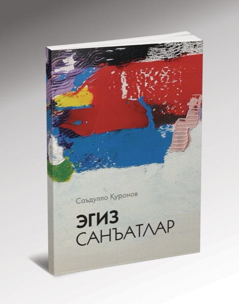
Sheʼriyat va rangtasvir sintezi masalalariga bagʻishlangan tadqiqot. Kirill yozuvida.
PDF yuklab olish · 2.7 MB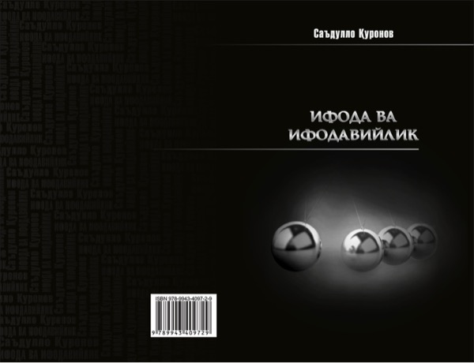
Badiiy sintez, modernizm va postmodernizm masalalariga oid maqolalar. Kirill yozuvida.
PDF yuklab olish · 1.2 MB